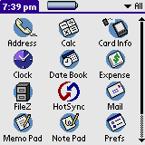
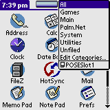
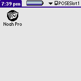

| Q1. I get "Database not found" error on startup |
It means that only the reader program has been installed (noah_pro.prc). Please also install a database (e.g., wn_medium.pdb) on your device. Please read installation manual for more information.
| Q2. I use Macintosh and I got garbage on the screen or program crashes. |
It is very important to have correct settings for unzipping program for unpacking noah_pro.zip. Some unzippers have settings to convert text files to Mac text files. This alters content of files and corrupts them.
In ZipIt the preference "by default, smart-strip linefeeds from text files" should be turned off.
In Stuffit Expander change settings to "never convert text files".
| Q3. I've installed the program on SD card but I don't see the icon. |
By default Palm launcher doesn't show programs installed on SD card. To do it you have to switch the view to your SD card:
 |
 |
 |
If you still don't see the icon please make sure that noah_pro.prc is really installed on SD card. To do it you can use a free program called Filez. Go to "/Palm/Launcher" directory on the SD card and see if Noah is there:
| Q4. I have problems installing the program |
Please make sure to follow exactly installation instruction in the manual. If you still have problems
| Q5. Where do I download additional databases for Noah Pro? |
You can download them from PalmGear or Handango.
| Q6. How can I make my own database? |
All is explained in this document
| Q. I have a question that is not answered here. |
Don't hesitate to ask us.